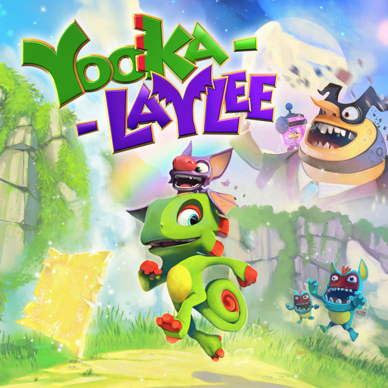

| Yooka-Laylee | |
|---|---|
|  | |
| Developer: | Playtonic Games |
| Publisher: | Playtonic Games |
| Year Released: | 2017 |
| Sound Team: | See left. |
Game Description
Yooka-Laylee is a 3D-platformer developed and published by Playtonic Games. The game was designed as a spiritual successor to collectathon games of the Nintendo 64 era with many former developers from the game studio Rare. This included the three composers who worked on the game, David Wise, Grant Kirkhope, and Steve Burke.
The game's soundtrack was very diverse as a result of employing the three different composers, with a blend of larger orchestral pieces, soothing synthetic pieces, and upbeat electronic tracks.
All three composers were originally contacted by the Playtonic team, primarily Gavin Price to influence them to join. Kirkhope had originally provided a beta track to help the Kickstarter funding for the game, and Burke created sound effects for the initial video. Wise would join after receiving a call from Gavin Price, and being further convinced by Kirkhope. Since then, Kirkhope and Wise were also recruited for Playtonic Games second game Yooka-Laylee and the Impossible Lair.
Soundtrack Contributors
| Name | Role |
|---|---|
| David Wise | Composer |
| Grant Kirkhope | Composer |
| Steve Burke | Composer and Sound Effects |
References Used
- Moore, Logan. “Yooka-Laylee Interview - Composers Grant Kirkhope, David Wise, and Steve Burke Talk About Making What's Old Sound New Again.” DualShockers, DualShockers, 23 Mar. 2017, www.dualshockers.com/yooka-laylee-composers-interview/. Accessed 30 June 2020.